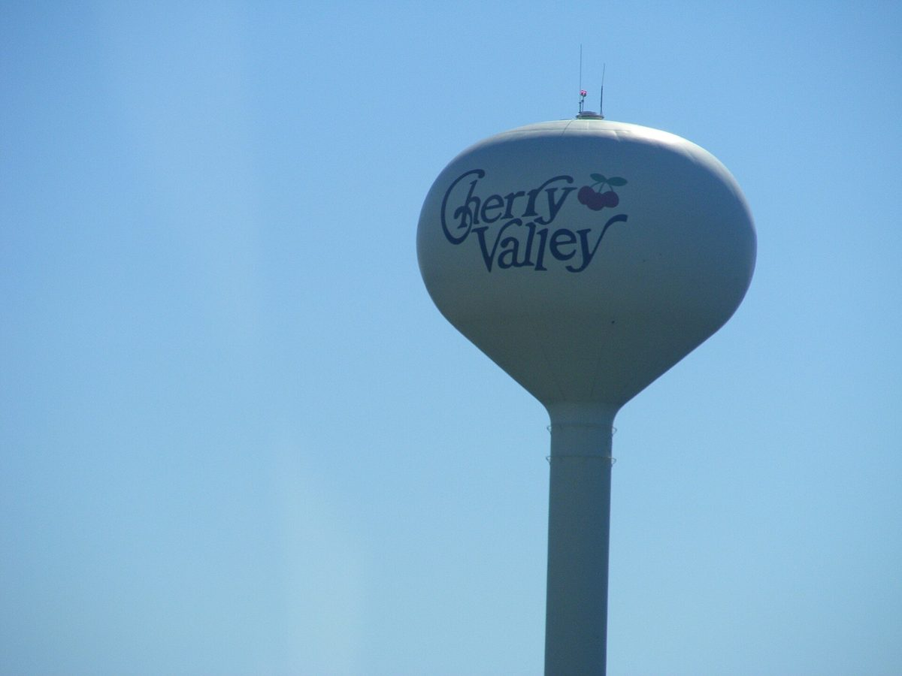

미국 일리노이 체리밸리에 7.4MW 커뮤니티 태양광 가동…세입자·소상공인도 구독하면 전기요금 약 10% 절감

700여 가구·점포 쓸 전기, 개발사는 공동체 혜택 협약으로 마을 전기차 충전소에 15만 달러 내놔
미국 일리노이주 북부 체리밸리 마을에 700곳이 넘는 가정과 소상공인이 쓸 수 있는 7.4MW 규모 커뮤니티 태양광 단지가 5일 전력망에 연결돼 가동을 시작했다. 약 34에이커(약 14만㎡) 부지에 들어선 이 단지는 지역 전력회사 ComEd 공급 구역에 사는 주택 소유자뿐 아니라 세입자와 소상공인도 구독 방식으로 참여할 수 있으며, 가입자는 지붕에 패널을 달지 않고도 전기요금을 약 10% 아낄 수 있다. 개발사 ECA Power는 마을과 맺은 공동체 혜택 협약에 따라 새 전기차 충전소의 설치·운영·유지에 쓰도록 15만 달러를 내놨고, 마을은 시내 몇 곳을 충전소 후보지로 정해 두었다. 준공 행사에 참석한 주 하원의원은 건물을 빌려 쓰는 소상공인도 재생에너지를 원한다며 이런 사업이 그 길을 열어 준다고 말했다. ComEd는 일리노이 북부가 커뮤니티 태양광에서 전국을 이끄는 지역이 되고 있다고 밝혔으며, 이웃 도시 록퍼드의 첫 커뮤니티 태양광도 최근 가동 1년을 맞았다.
시민에너지 관점
지붕이 없는 세입자와 가게 주인이 구독만으로 요금을 10% 줄일 수 있다는 점이 커뮤니티 태양광의 힘이다. 우리나라에서 태양광 혜택은 여전히 지붕과 땅을 가진 사람에게 몰려 있고, 아파트·상가 세입자는 참여할 길이 거의 없다. 발전소가 마을에 들어설 때 충전소 기금 같은 공동체 몫을 협약으로 못 박는 방식도 주민 반대를 줄이는 현실적인 해법이다. 정부와 지자체는 세입자도 가입할 수 있는 지역 구독형 태양광 제도를 열고, 수익과 혜택이 그 지역 주민에게 돌아가도록 설계해야 한다.
출처: Rock River Current 2026-11-06 Kevin Haas 원문 보기
米イリノイ州チェリーバレーで7.4MWのコミュニティ太陽光が稼働…賃借人や小規模事業者も加入すれば電気代約10%節約
700余りの世帯・店舗分の電力、開発会社はコミュニティ便益協定で村のEV充電所に15万ドルを拠出
米イリノイ州北部のチェリーバレー村で、700以上の家庭と小規模事業者が使える7.4MW規模のコミュニティ太陽光発電所が5日に送電網に接続され、稼働を始めた。約34エーカーの敷地に設けられたこの発電所には、地域電力会社ComEdの供給区域に住む住宅所有者だけでなく、賃借人や小規模事業者も加入方式で参加でき、加入者は屋根にパネルを付けなくても電気代を約10%節約できる。開発会社ECA Powerは村と結んだコミュニティ便益協定に基づき、新しい電気自動車充電所の設置・運営・維持に充てる15万ドルを拠出し、村は中心部の数カ所を候補地に定めている。竣工式に出席した州下院議員は、建物を借りて営業する小規模事業者も再生可能エネルギーを望んでおり、こうした事業がその道を開くと述べた。ComEdはイリノイ州北部がコミュニティ太陽光で全米をリードする地域になりつつあると説明し、隣のロックフォード市初のコミュニティ太陽光も最近稼働1年を迎えた。
市民エネルギーの視点
屋根を持たない賃借人や店主が加入するだけで電気代を10%減らせることこそ、コミュニティ太陽光の力だ。韓国では太陽光の恩恵は依然として屋根や土地を持つ人に集中し、マンションや商店の賃借人が参加する道はほとんどない。発電所が村にできる際、充電所の基金のような地域の取り分を協定で定める方式も、住民の反対を和らげる現実的な解決策だ。政府と自治体は賃借人も加入できる地域加入型太陽光の制度を開き、収益と便益がその地域の住民に戻るよう設計すべきだ。
出典: Rock River Current 2026-11-06 Kevin Haas 原文を読む
美国伊利诺伊州樱桃谷7.4兆瓦社区太阳能投运，租户和小商户订阅即可节省约10%电费
可供700余户家庭和店铺用电，开发商依社区惠益协议向村里捐出15万美元建电动车充电站
美国伊利诺伊州北部樱桃谷村一座7.4兆瓦的社区太阳能电站于5日并网投运，可供700多户家庭和小商户用电。电站占地约34英亩，地区电力公司ComEd供电范围内的房主以及租户和小商户都可以通过订阅方式参与，用户无需在屋顶安装面板，就能节省约10%的电费。开发商ECA Power依据与村方签订的社区惠益协议，拿出15万美元用于新建电动车充电站的建设、运营和维护，村方已在市中心选定几处候选地点。出席竣工仪式的州众议员表示，租用店面的小商户同样希望使用可再生能源，这类项目为他们打开了大门。ComEd表示，伊利诺伊州北部正成为全美社区太阳能的领先地区，邻近罗克福德市的首个社区太阳能项目最近也已运行满一年。
市民能源视角
没有屋顶的租户和店主只要订阅就能把电费降低10%，这正是社区太阳能的力量。在韩国，太阳能的好处仍集中在拥有屋顶和土地的人身上，公寓和商铺租户几乎没有参与的途径。电站落户村庄时，以协议形式明确充电站基金之类的社区份额，也是减少居民反对的现实办法。政府和地方自治团体应开放租户也能加入的地区订阅型太阳能制度，并在设计上确保收益和好处回到当地居民手中。
来源: Rock River Current 2026-11-06 Kevin Haas 查看原文
7.4 MW Community Solar Farm Comes Online in Cherry Valley, Illinois, Letting Renters and Small Businesses Cut Bills by About 10%
Enough for more than 700 homes and shops; developer gives the village $150,000 for EV chargers under a community benefit agreement
A 7.4-megawatt community solar farm able to supply more than 700 homes and small businesses was connected to the grid on the 5th in the village of Cherry Valley in northern Illinois. Built on about 34 acres, the project is open by subscription not only to homeowners in utility ComEd's service area but also to renters and small businesses, who can save roughly 10% on their electricity bills without installing panels on their own roofs. Under a community benefit agreement with the village, developer ECA Power contributed $150,000 toward building, operating and maintaining new electric vehicle charging stations, and the village has already identified several downtown sites. A state representative at the ribbon-cutting said small business owners who rent their premises also want renewable energy and that projects like this give them a way in. ComEd said northern Illinois is becoming a national leader in community solar, and the first such project in neighbouring Rockford recently marked a year of operation.
Citizen Energy View
The strength of community solar is that renters and shopkeepers without a roof can cut their bills by 10% simply by subscribing. In Korea the benefits of solar still go mainly to those who own roofs and land, and tenants of apartments and shops have almost no way to take part. Writing a community share, such as a charging-station fund, into an agreement when a plant arrives in a village is also a practical way to ease local opposition. The government and local authorities should open a local subscription solar scheme that tenants can join, and design it so that the income and benefits return to local residents.
Source: Rock River Current 2026-11-06 Kevin Haas Read the original